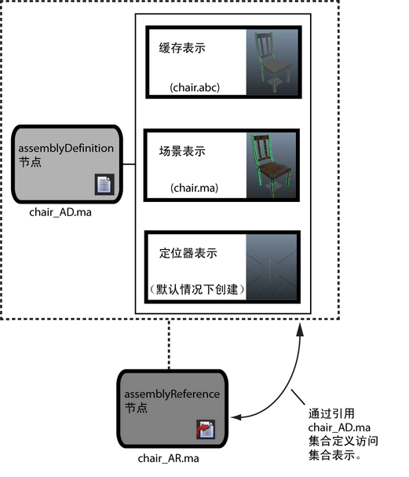
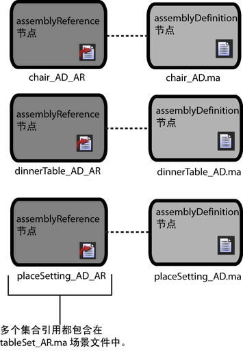

集合引用（assemblyReference 节点）控制将在场景中显示产品级资产的哪一表示，并允许您在资产的表示之间切换。Maya 场景可以包含多个集合引用节点，您可以添加多个独立产品级资产，以组成一个大的场景或布局。
只有作为集合表示添加到 assemblyDefinition 节点中的对象才能存在于集合引用节点层次中。您不能通过建立父子关系直接将对象添加到集合引用节点中。
在创建集合引用节点时，它将显示在“大纲视图”(Outliner)、“节点编辑器”(Node Editor)和由图标  表示的“Hypergraph”中。
表示的“Hypergraph”中。
下图显示了简单的集合引用。

集合定义定义了每个资产或每种资产的集合表示列表。例如，您可能有很多不同类型的椅子要在场景或产品中使用。集合定义中有此椅子列表，即一个 Maya 场景文件，可方便您查看可用的表示。集合引用是资产类型的主对象。您可在场景中填充集合引用，在对布局或快照构建集合时，便可以操纵这些对象。
集合引用节点可以进行嵌套，从而您可以展开场景集合的结构以包含多个集合定义节点的表示数据。场景表示可以源于其他集合引用节点，从而您可以访问庞大数据集，并且能够在单个 Maya 场景文件中的大量产品级资产之间切换。

重要说明
- assemblyReference 节点始终引用 assemblyDefinition 节点。在场景集合工作流中它不具有其他函数。您不能直接将集合表示添加到集合引用中。
- 任意数量的集合引用可以指向单个 assemblyDefinition 节点。
- 请勿使用 Maya 导出命令（例如“文件 > 导出全部”(File > Export All)）保存包含 assemblyReference 节点的文件。
- 您不能删除或重新命名嵌套的 assemblyReference 节点。
- 您不能实例化 assemblyReference 节点。
- 对 assemblyReference 节点和其他 Maya 节点或 assemblyReference 节点进行分组或建立父子关系可能会导致不可预测的结果。
- assemblyReference 节点不使用以前的 Maya 文件引用系统来引用 assemblyDefinition 节点。场景集合与文件引用不兼容。